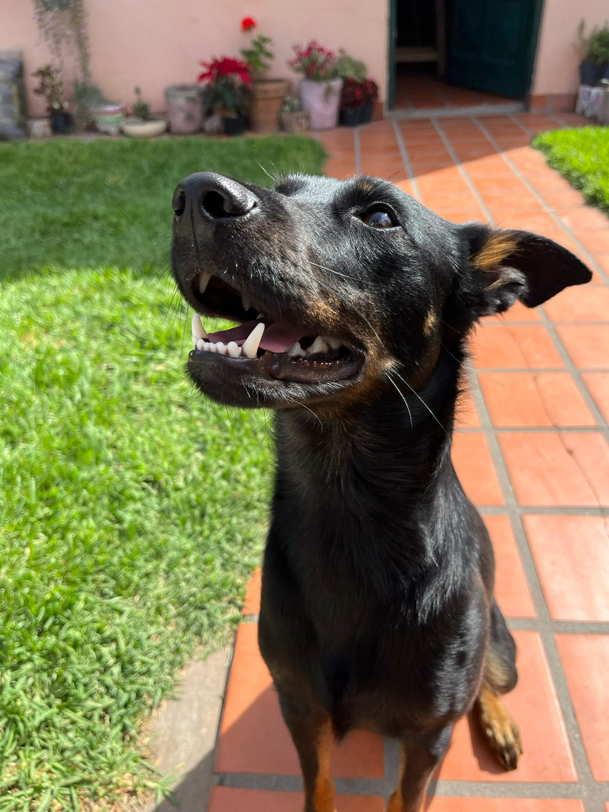

Nosotros
En Patitas Unidas trabajamos incansablemente para que ningún perro tenga que pasar frío o hambre en la calle.
Nuestra Identidad
Somos una organización sin fines de lucro nacida de la idea de compañeros de la facultad que compartían un mismo sueño: comprometernos a cambiar el mundo para los animales sin hogar.
Nuestra labor comenzó rescatando perritos en zonas vulnerables, brindándoles salud y dignidad desde el primer día.
Si querés conocer nuestras instalaciones, podés escribirnos a través de la página de Contacto para agendar una visita guiada.

Nuestros Objetivos
Buscamos reducir el maltrato animal mediante la educación y la acción directa. No solo rescatamos, sino que cambiamos la vida de las familias que adoptan.
Trabajamos codo a codo con las familias para asegurar que el vínculo con su nueva mascota sea permanente y responsable.
Podés colaborar con nuestra causa realizando una donación o simplemente difundiendo nuestras fotos de perritos en adopción.

El Corazón de la ONG
Contamos con un equipo que se encuentra siempre activo y comprometido para poder brindar la mejor ayuda posible.
Cualquier persona con ganas de ayudar puede sumarse, siempre y cuando comparta nuestra filosofía de respeto absoluto por la vida animal.